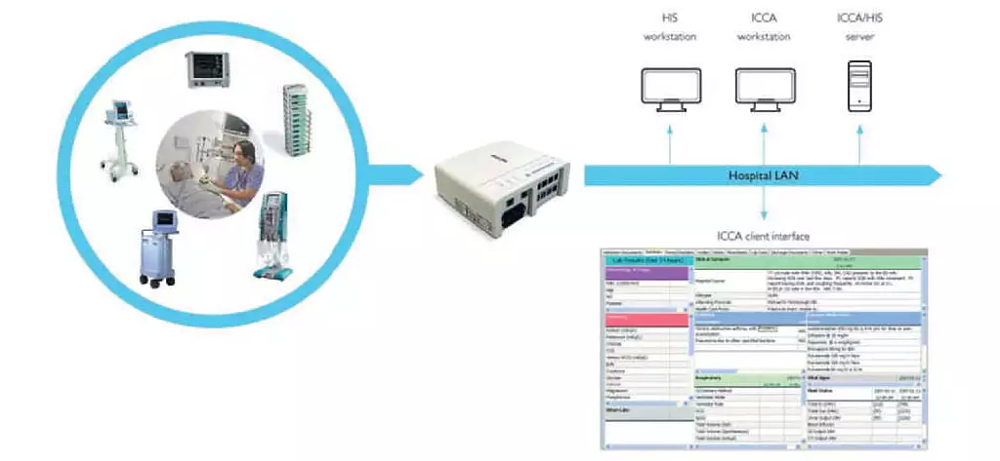

Root Cause & Technical Analysis - Philips IntelliBridge EC40/80 Gateways (2022)
The vulnerabilities found in Philips IntelliBridge EC40 and EC80 gateways were primarily due to hard-coded credentials and weak access control mechanisms within the device firmware. Researchers discovered that these credentials were embedded directly into the system software and were identical across all deployed devices, meaning any attacker who uncovered them could gain privileged access to any IntelliBridge system.
Once authenticated, attackers could access the device's internal file system and configuration interfaces. Because the gateways were designed to interface between patient monitors and hospital EMR systems, compromising one provided a direct line into sensitive patient data transmissions. The devices also lacked proper role-based access control (RBAC), meaning administrative privileges were not properly restricted. Additionally, poor network segmentation in many hospital environments made it easier for a compromised gateway to serve as an entry point into larger medical networks.

From a technical perspective, the firmware design failed to adhere to modern secure development standards such as eliminating hard-coded secrets, enforcing password rotation, and logging administrative actions.
The affected devices operated on an embedded Linux platform, where several system services were running with elevated privileges.
This made it possible for attackers to exploit the hard-coded credentials to extract files, modify configuration settings, or even inject malicious code to alter patient data flow.
CISA classified these issues under CVE-2022-30277 and related advisories, assigning a CVSS v3 score of 7.6 (high severity).
The vulnerabilities could be exploited remotely if the device was exposed to the hospital network or connected to the internet without proper segmentation or firewalls in place.
